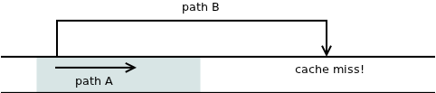

If you ever skimmed linux kernel code may have noticed that condition expressions are often marked as either 'likely' or 'unlikely':
if (likely (i == 0)) {
...
}
What is it good for?
These directives are translated into the following GCC directives:
#define likely(x) __builtin_expect ((x), 1)
#define unlikely(x) __builtin_expect ((x), 0)
These in turn instruct the compiler which branch of the program should be faster and which may execute slower.
To understand how it works we need to understand few details about modern CPUs. Most importantly, that accessing memory is extremely slow when compared to other CPU operations. An operation requiring memory access can take literally 100 times longer to execute than an operation using CPU registers.
To mitigate the problem, CPU designers have come with the concept of CPU caches. The idea is that part of memory currently in use is copied from the memory into the CPU itself. That way you gain an order of magnitude improvement in performance.
The obvious problem with that is that the size of CPU cache is limited in size. You can't copy entire memory into it. So, the CPU has to guess which memory is going to be used in the near future and load that memory into the CPU cache. The algorithms for doing that can be as simple as 'memory that was used most recently is the most likely to be used in the future' or more sophisticated like 'it the program is using memory at address X now, it is likely to use memory at address X+1 in a short time".
Whatever the case, failure to predict which memory is going to be used results in so called "cache miss" and operation that would otherwise take 1 nanosecond will suddenly take 30 nanoseconds. Consequently, most of the micro-optimisation work done today deals with avoiding cache misses.
Another piece of the puzzle is the fact that the algorithms themselves are stored as data. The machine instructions reside in the memory and have to be accessed in the same way as data in text documents, images, databases etc. What that means is that if program jumps to an address that is not currently in the CPU cache, the execution of program hangs up for say 30 nanoseconds, till next instruction is loaded from the memory.
Now, what if the jump is conditional? Obviously one path will simply continue executing the subsequent instructions which happen to be already loaded in the CPU cache. The other path jumps to another memory location and thus risks a cache miss and the associated performance penalty:

In short, when there's a conditional jump (it-then-else statement in high-level languages) there will necessarily be a "slow" path and a "fast" path. And it's up to you, as a programmer, to decide what code to put on the fast path and which should go to the slow path.
Imagine this piece of code:
if (nuclear_reactor_leaking)
goto emergency;
/* Do routine maintenance here. */
...
emergency:
/* Start emergency procedure here. */
...
When the nuclear reactor is leaking the execution jumps to another memory location and is likely to experience a cache miss. Thus, handling of the emergency condition is postponed by 30 nanoseconds.
On the other hand, if the nuclear reactor is working as expected the routine maintenance is executed extremely fast, with no cache misses.
Obviously, this is not the desired behaviour. We should re-write the above code in the following manner:
if (!nuclear_reactor_leaking)
goto maintenance;
/* Start emergency procedure here. */
...
maintenance:
/* Do routine maintenance here. */
...
However, even in this case the compiler is free to re-order the layout of the code in the memory. Such re-ordering is often done during the optimisation phase of the compilation. Here's where likely() and unlikely() macros come to help. They instruct the compiler about how to layout the branches in the memory. We can re-write the above program this way:
if (likely (nuclear_reactor_leaking)) {
/* Start emergency procedure here. */
...
}
else {
/* Do routine maintenance here. */
...
}
So far so good.
However, have a look at the last code sample once again. Have you noticed anything strange?
Well, nuclear reactor leakage is not likely. Just the opposite. It is extremely rare. And yet we are supposed to mark it as "likely". Yuck!
And this is the point I want to make in this article: likely() and unlikely() macros have stupid names. Actually, the names are seriously misleading.
I've seen people reasoning this way: "This patch is going to be executed in 90% of cases, so let's mark is as likely." While the reasoning may work well in most cases, applying it to our nuclear reactor example means doing the exact opposite of what's needed.
I've even seem people reason like this: "This branch is short and it will execute quickly. Let's mark it as likely." Once again, this may work well in most cases, but won't work for the nuclear reactor example. However short and efficient the maintenance procedure is, it should never be marked as likely. It's always the emergency procedure that should be tagged as likely, irrespective of how long and slow it happens to be.
In short, when you are thinking about whether to mark a branch as likely or unlikely, you should not ask about it existing performance characteristics (How often does it get called? How long does it execute? Etc.) but rather ask yourself about your intended performance characteristics (Do I want this branch to be fast? Can I tolarate a little delay in this branch? Etc.)
The rule of the thumb is: Mark branch that you want to be executed quickly as "likely" and the other branch as "unlikely".
You can even formalise this rule in the following way:
#define accelerate(x) likely(x)
#define decelerate(x) unlikely(x)
And our nuclear reactor example would now look like this:
if (accelerate (nuclear_reactor_leaking)) {
/* Start emergency procedure here. */
...
}
else {
/* Do routine maintenance here. */
...
}
Makes more sense now, doesn't it?
Jun 22th, 2012